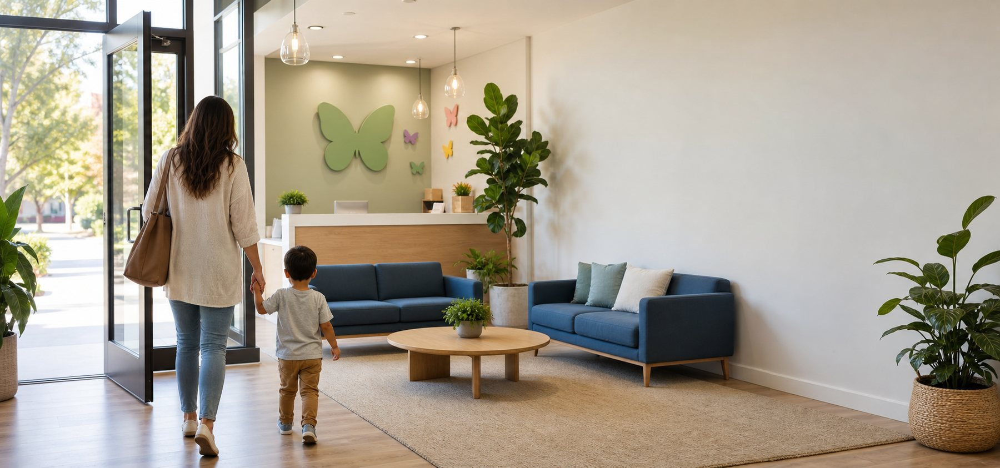
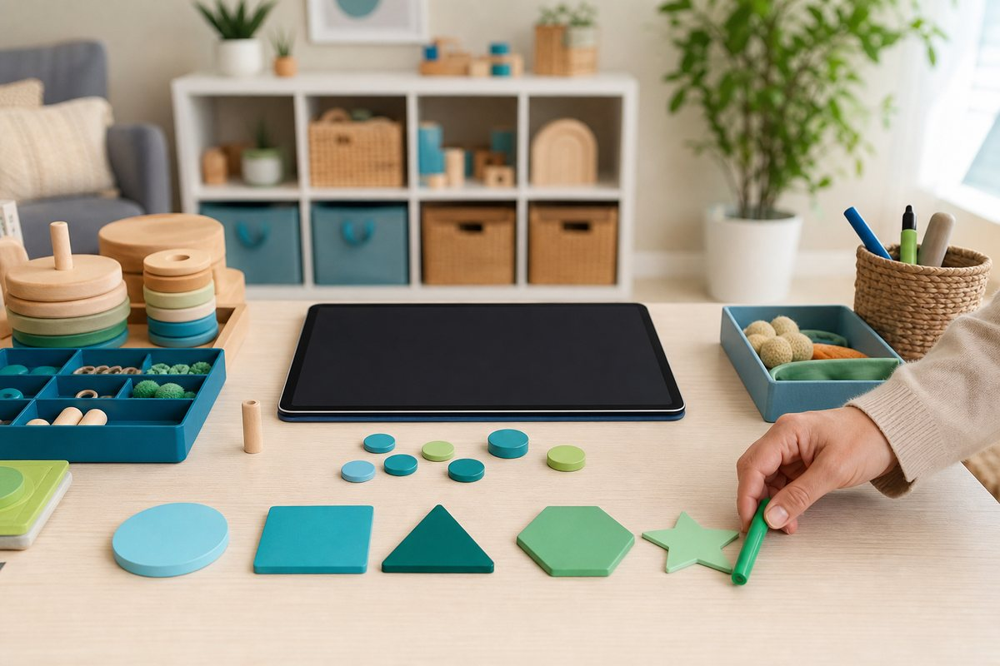

ABA therapy and developmental support
Empowering every child through care and expertise—beyond all limits.
Compassionate ABA therapy and developmental support designed to help children build communication, confidence, independence, and meaningful everyday skills.

Individualized child development care
Personalized Care for Every Step and Stage
At Bloompath, every child’s journey is unique. We create a safe and supportive environment where growth feels natural, achievable, and full of encouragement. Each ABA program is thoughtfully tailored to strengthen a child’s individual abilities, respect their learning pace, and celebrate every meaningful milestone—across both developmental and behavioral needs.
Our team of Board-Certified Behavior Analysts (BCBAs) and dedicated therapists blend research-based ABA strategies with genuine care, turning everyday moments into opportunities for lasting progress. Whether it’s enhancing communication, building social connections, or fostering independence, we walk alongside every child and family—one steady step at a time.
Social Connection
Independence

Insight with warmth
Leading with Insight and Evidence
At Bloompath, we combine compassionate care with data-driven precision to ensure that every child’s progress is visible, meaningful, and lasting. Using evidence-based strategies and continuous performance tracking, our team refines each program in real time—so growth never stands still.
Our secure digital system monitors skill development, goal achievement, and behavioral patterns across every session. This allows us to make informed adjustments, celebrate measurable progress, and share transparent updates with families. At Bloompath, progress isn’t just what we measure—it’s what we nurture.
Our Services
Support That Moves With Your Child
Center-Based ABA Therapy
A joyful, structured center environment where children learn through play, movement, and connection.
Learn MoreIn-Home ABA Therapy
Personalized support woven into your child’s familiar home routines and family life.
Learn MoreSchool Collaboration
Consistent support that helps children stay engaged, focused, and confident throughout the school day.
Learn MoreCommunity Integration
Real-world practice that helps children build independence in parks, stores, outings, and group settings.
Learn MoreEarly Intervention
Play-based support that builds strong foundations during the most important developmental years.
Learn MoreAutism Diagnosis
Thoughtful assessments that help families better understand their child’s strengths and support needs.
Learn MoreWhy families choose Bloompath
Why Families Choose Bloompath
Families choose Bloompath because we combine evidence-based ABA therapy with genuine compassion, consistent communication, and individualized care. Every child’s program is designed around their strengths, needs, learning style, and family environment—so progress feels meaningful, supported, and connected to real life.
Our team partners closely with parents, caregivers, schools, and clinical professionals to create a clear path forward. From the first conversation to every milestone after, Bloompath is here to help families feel informed, confident, and never alone.
Individualized Care
Every program is tailored to each child’s goals, strengths, and developmental needs.
BCBA-Led Programs
Care plans are guided by Board-Certified Behavior Analysts and delivered by trained therapists.
Family Partnership
Parents and caregivers receive practical strategies that support progress at home and beyond.
Real-Life Progress
Skills are practiced across home, center, school, and community settings.
Getting Started
Getting Started Is Simple
Beginning therapy can feel overwhelming, but Bloompath makes the process clear and supportive. Our team will guide you through each step—from your first inquiry and insurance review to assessment, treatment planning, and ongoing care.
Start the Process-
Step 1
Contact Bloompath
Tell us about your child and the support your family is looking for.
-
Step 2
Verify Insurance
Our team helps review your coverage and explain possible next steps.
-
Step 3
Complete Assessment
A clinical professional evaluates your child’s strengths, needs, and goals.
-
Step 4
Begin Therapy
Your child starts an individualized program designed for meaningful growth.

Ready to Take the Next Step?
Ready to Take the Next Step?
Whether you are exploring ABA therapy for the first time or looking for a more supportive care experience, Bloompath is here to help your child grow with confidence, joy, and independence.